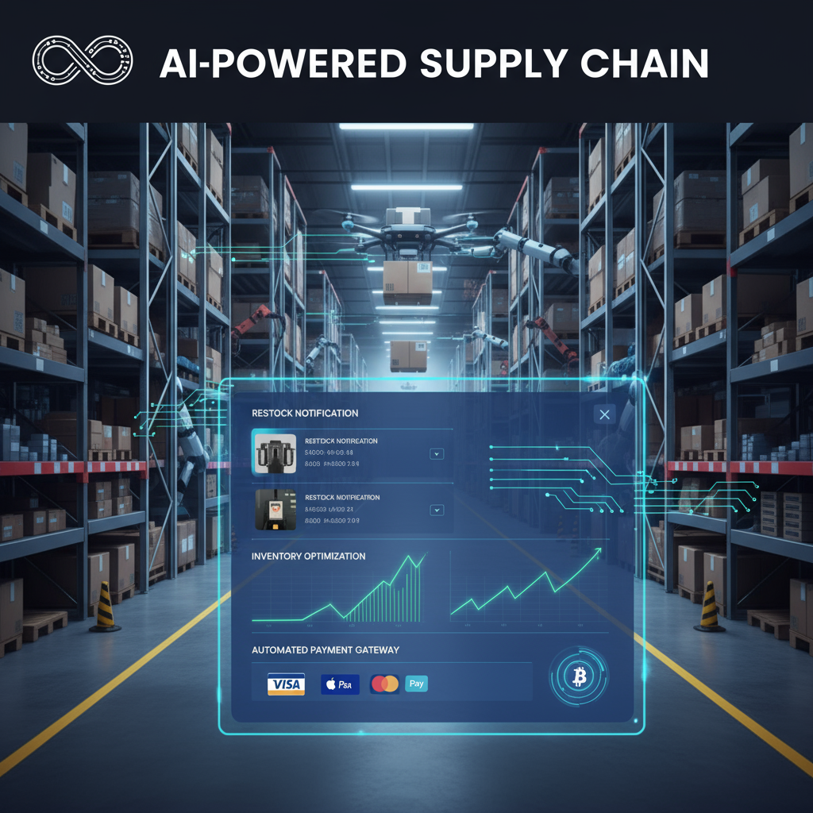

Projects
Selected work from my internship and personal builds.
Voice AI / RAG
Confidential
Priya — Multilingual AI Voice Agent
Problem
Corporate customer support faced friction processing spoken queries in regional dialects, causing operational lag.
Solution
Built an autonomous multilingual voice pipeline using Bhashini APIs for speech recognition and synthesis, ChromaDB for vector search, and a RAG-based LLM pipeline to answer queries in sub-second latency across Hindi, Marathi, and Tamil.
My Role
Designed conversation state orchestration, optimised ChromaDB chunk queries, and integrated STT/TTS adapters.
NLP / Text Classification
Confidential
HR Sentiment Analysis Platform
Problem
HR teams receive thousands of open-ended survey responses; manual analysis is cost-prohibitive and concerns go unnoticed.
Solution
Fine-tuned a DistilBERT transformer for sentiment classification on organisational feedback, achieving an F1-score of 89.7%. Output feeds a dashboard that flags concern clusters automatically.
My Role
Optimised PyTorch tokenizer scripts, handled high-volume dataset cleaning, and organised emotion density cluster maps.
Operations Research / Linear Programming
Confidential
Scheme Optimisation Engine
Problem
Enterprise incentive schemes required optimal resource allocation under complex multi-variable constraints; manual scheduling produced sub-optimal overhead distribution.
Solution
Formulated a linear programming system using SciPy's HiGHS solver to minimise overhead allocation across 12 constraint vectors, integrated with SQL data adapters.
My Role
Formulated objective functions and constraint matrices; built SQL-to-matrix data adapters.

Auto Restock — AI Inventory Automation
AI-powered inventory management platform that automates restock decisions using demand forecasting and supplier APIs. Won 1st Place at the Payman AI Dev Challenge.
AI Job Market Analysis
Exploratory analysis of global AI hiring trends, skill demand shifts, and salary distributions across roles and geographies.
Taxi Revenue Forecasting
Time-series revenue forecasting model for urban taxi operations using NYC trip data, incorporating weather and event variables.
UPI Transaction Analysis
Analysed UPI payment transaction data to surface usage patterns, peak periods, and demographic spending behaviour across categories.

Global Cities Economic Analysis
Cross-city economic comparison covering GDP, cost of living, workforce composition, and urban productivity indicators.